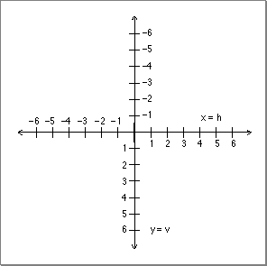
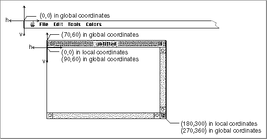

Graphics Ports
Each window represents a QuickDraw graphics port, which is a drawing environment with its own coordinate system. (See Inside Macintosh: Imaging for a complete description of graphics ports and coordinate systems.) When you create a window, the Window Manager creates a graphics port in which the window's contents are displayed.The location of a window on the screen is defined in global coordinates--that is, coordinates that reflect the entire potential drawing space. QuickDraw and Color QuickDraw recognize a coordinate plane whose origin is the upper-left corner of the main screen, whose positive x-axis extends rightward, and whose positive y-axis extends downward. In QuickDraw, the horizontal offset is ordinarily labeled
h, and the vertical offset v. Figure 4-13 illustrates the QuickDraw global coordinate system.Figure 4-13 The QuickDraw global coordinate plane

When QuickDraw creates a new graphics port (usually because you've created a new window through the Window Manager), it defines a bounding rectangle for the port, in global coordinates. Ordinarily, the bounding rectangle represents the entire area of the screen on which the window appears. The bounding rectangle is stored in the graphics port data structure, in the bounds field of a structure called a pixel map in Color QuickDraw and a bitmap in QuickDraw.
- Note
- The orientation of the vertical axis, while convenient for computer graphics, differs from mathematical convention. Also, the coordinate plane is bounded by the limits of QuickDraw coordinates, which range from -32,768 to 32,767.
- QuickDraw stores points and rectangles in its own data structures of type Point and Rect. In these structures, the vertical coordinate (
v) appears first, followed by the horizontal coordinate (h). Most, but not all, QuickDraw routines that handlepoints require you to specify the coordinates in this order.The graphics port data structure also includes a field called portRect, which defines
a rectangle to be used for drawing. In a graphics port that represents a window, the portRect rectangle represents the window's content region.Within the port rectangle, the drawing area is described in local coordinates--that is, in the coordinate system defined by the port rectangle. You draw into a window in local coordinates, without regard to the window's location on the screen (which is described in global coordinates). Figure 4-14 illustrates the local and global coordinate systems for a sample window 180 pixels high by 300 pixels wide, placed with its content region
- Note
- When you place a window on the screen, you specify the location of its content region, in global coordinates. Remember to allow space for
the window's title bar. On the main screen, remember to leave space for the menu bar. In the Roman script system, both the standard document title bar and the menu bar are 20 pixels high. You can determine the height of the menu bar with the Menu Manager GetMBarHeight function. You can calculate the height of the title bar by comparing the top of the window's structure region with the top of the window's content region. See Listing 4-12 on page 4-48 for a sample procedure that considers the menu bar and title bar when placing a window on the screen.
70 pixels down and 60 pixels to the right of the upper-left corner of the screen.When the Window Manager creates a window, it places the origin of the local coordinate system at the upper-left corner of the window's port rectangle. You can redefine
the coordinates of the port rectangle's upper-left corner with the QuickDraw
procedure SetOrigin.The Event Manager describes mouse events in global coordinates, and you do most of your window manipulation in global coordinates. You generally display user data and manipulate your controls in local coordinates. When you need to convert between the two, you can call the QuickDraw functions GlobalToLocal and LocalToGlobal, described in Inside Macintosh: Imaging.
Figure 4-14 A window's local and global coordinate systems
